当前版本（11-06，Spark 33，已提交预约）的全部剧情整理。截图和插图都是游戏里实际使用的美术。
一句话：世界靠一道「承世之咒」撑着，每一代王都要走进咒里献出自己。你是一个双手缠满绷带、能把四色元素搓成魔法的无名魔导师。你已经走过这条登天路很多世，每一世都会忘记。这一世，你要一关关打上去，拼回自己的过去，并决定这个世界的结局。
核心悬念：你是谁？为什么每次倒下都会在泉边醒来？守关者为什么都像认识你？
新玩家第一次进游戏，会看到约 40 秒的开场（7 幕，配音）：
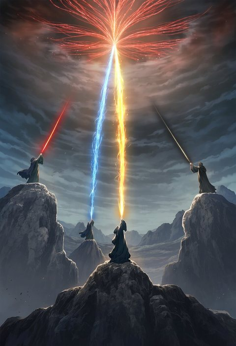
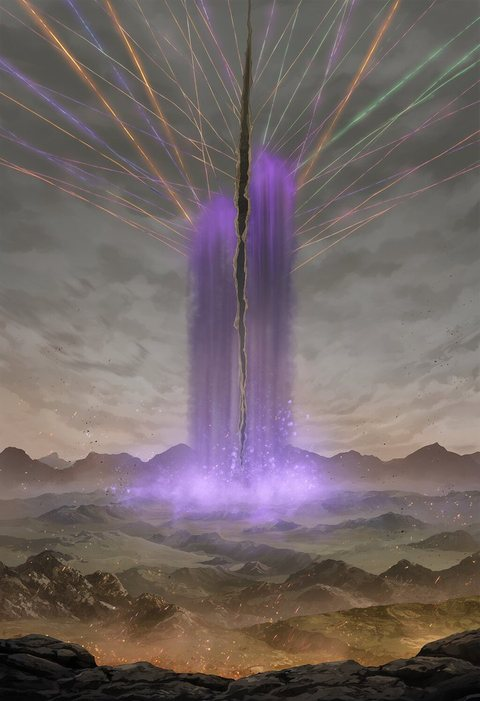
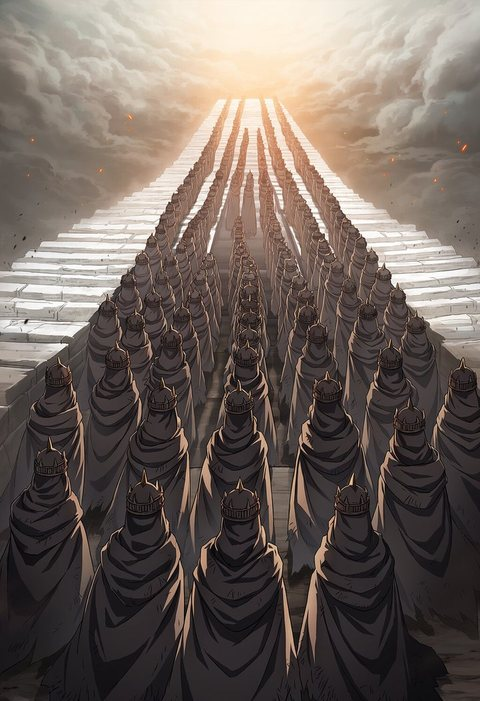
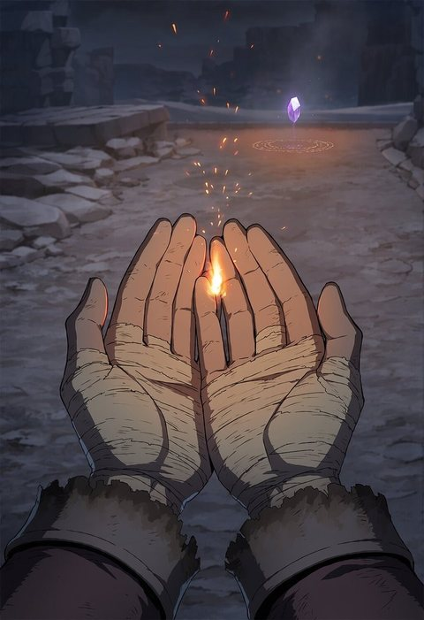
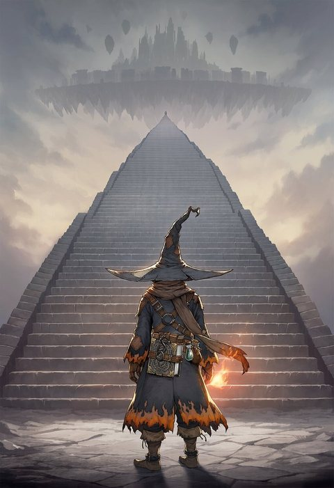
整个故事的秘密都藏在过去。玩家越往上打，就越能拼出这三段：
| 人物 | 是谁 | 和主角 |
|---|---|---|
| 你（无名魔导师） | 双手缠满绷带，能把四色元素搓成魔法。前世叫艾瑞，第一世是阿斯特里昂的学生。 | — |
| 薇丝塔（守泉人） | 营地的引路人、商店老板。一千年前的初代守泉人。闭上眼，就能看见源泉底的记忆。 | 一千年来每一世都把你从源泉里捞回来。她爱你，她给你「昨天」。 |
| 克洛伊（第 5 关） | 浮空遗城的停时魔女，停住时间三百年。 | 前世的爱人。她给你「明天」。 |
| 雷恩（第 6 关） | 熔冠天骑，天穹壁垒的守护者。 | 前世的歃血兄弟，你替他走进了光里。 |
| 阿斯特里昂（第 8 关） | 初代魔法王，一千年从未睡去。 | 你第一世的老师，也是他念出了你的名字。 |
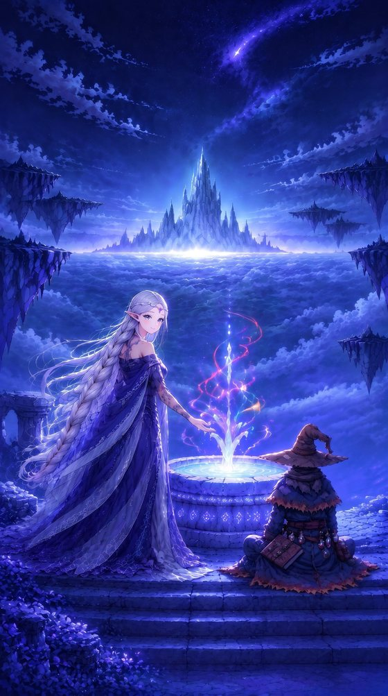
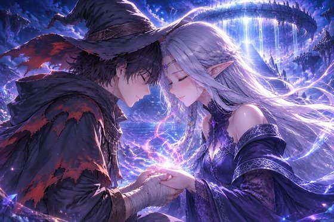
左：营地与守泉人薇丝塔；右：源泉唤醒，她额头抵着你，把前世的魔法还到你手里。
每位守关者都不是坏人，各自代表「魔力枯竭面前的一种活法」。他们拦你，都有自己的理由。击败后掉落残卷（身世碎片）和一片「那一夜」残忆。
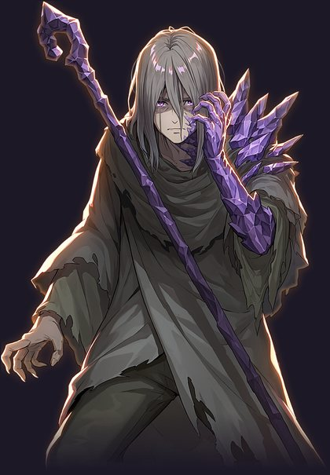
为何而战：魔蚀第一次落下时，是他先伸出了手。他学会了把魔蚀「吞」下去：吞下的是土地被收回后留下的空。晶长一寸，荒原便塌慢一寸，他的半张脸和一条手臂已经长成了紫晶。
和主角：他劝每个登天者回头，因为他见过往上走的人变成了什么。晶的最深处嵌着一截旧绷带，是很久以前一个往上走的人留下的。那是薇丝塔为你缠的。
被击败：「好轻……原来我还能这么轻。」
心愿：想在荒原上再种一季麦子。他曾是唯一会用火魔法烤面包的术士。
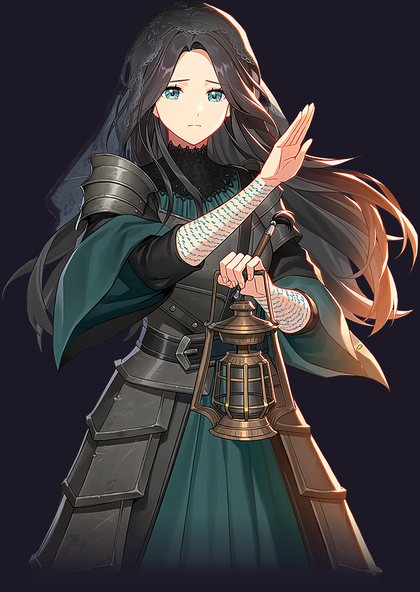
为何而战：魔都沉没那一夜，她没有逃，用笔把整座湖的水「写」住了。名字还写着，人就不算沉没。纸写满了，她就写在自己的颈上、臂上。
和主角：三百年前，她替新王誊写王名录。送来的名字是「雷恩 · 卡斯坦」，走进光里的却是另一个人。她只写下「艾」字的第一笔，城就沉了。那行名字她故意不写完：只要没写完，你就还没沉下去。
被击败：「那一行……我留了三百年。原来是留给你自己来写的。」
心愿：上桥去，把那条补丁皮裤还给少年时的同门菲奥娜。
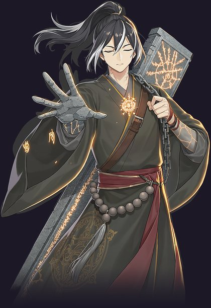
为何而战：古道守誓人，立誓为登天者守门，直到最后一位王走过。每送一人上山，他身上就有一块皮肉化作石头，同伴们一个个成了台阶。他把他们刻进誓碑，用铁链背在身上。守门时闭着眼，不看来人的脸，就不会心软。
和主角：他送你上山的次数比任何人都多。三百年前那个满手灼痕的年轻人问他：「守了这么久，不想坐下吗？」一千年里只有你问过。那一夜之后，他把誓碑最后一行「守誓人送王，至死不问」凿平了。
被击败：「你问过我，想不想坐下。……现在，我可以坐了。」
心愿：想坐下来。他已经挑好了一级晒得到太阳的台阶，旁边留了一个位置。
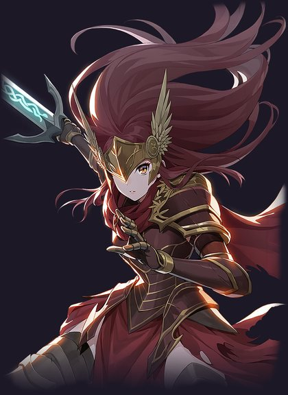
为何而战：三百年前她是断桥守卫团最小的团员，个子只够得着团旗下摆。桥断那天，全团跳下去托住了半座城，她挂在钩绳上没能跟上。她捡起团长的魔剑和翼盔，一个人守着半座桥，和风打了三百年，从女孩打成了战神。
和主角：最后一位过桥的王揉了揉她的头：「桥交给你了，小团长。」她记了三百年，却一直以为是团长说的。说那句话的人是你。
被击败：「原来那句『桥交给你了』……是你说的。……我长大了，你看见了吗。」
心愿：想听一句「做得好」。
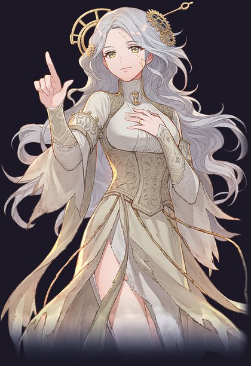
为何而战：律令点了她做下一位王，她拒绝了，认定王咒是一座吃王的笼子。女王走后城开始坠落，她用时间咒把整座城和自己停在坠落前的一刻，三百年。脸上的金色裂纹是时间的伤口，每补一道就忘掉一年。
和主角：前世的爱人。她忘了你的脸和名字，只记得一双缠满绷带的手。击败她后触发感情线 CG「时之约」（见第六节）。
被击败：「我的钟……开始走了。」「原来三百年……这么快。」
理想：「无王之纪」，一个不再需要任何人走进咒里的世界。
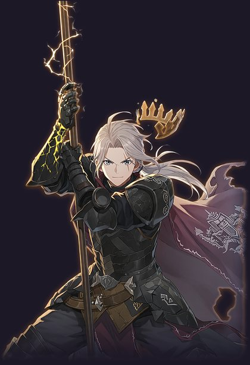
为何而战：醒来时只剩一张空王座。他熔掉卡斯坦家的王冠铸进右臂，发誓卡斯坦家再不出王，然后朝天上的裂缝开火，一守三百年。只要天不塌，就不必再有人上去替谁死。
和主角：前世的歃血兄弟，你替他走进了光里。壁垒最高处的旗上有两个名字，另一个被雷烧去一半，只剩一个「瑞」字。
被击败：「……艾瑞？」「你这个混蛋……三百年。上去吧，这一次，我在后面替你守着天。」
心愿：找到那个人，揍他一拳，然后请他喝一杯。
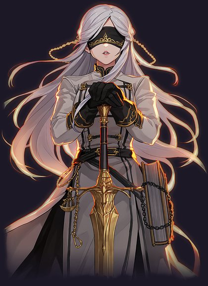
为何而战：她的职责只有一条：把每一位新王送进那道光里。王城空了，她仍每日对着无人的王座宣读律令。你要登天，就必须先过律令。
和主角：那一夜宣读律令的是她。她看见了，走到光前的不是被选中的雷恩，却还是让你进去了。你走进光里前回头朝她笑了一下。从那天起她以黑缎蒙眼，在律令最后加了一条：「不看。」
被击败：「那一夜……我看见了，走进去的不是他。」「我还是让你进去了。……现在，我可以看一眼了吗。」
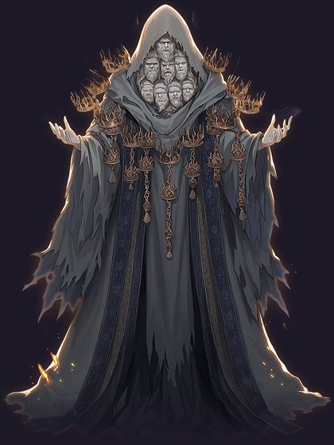
历代走进咒里的王。他们撑了一千年，已经记不得为什么要撑。他们要你也成为他们：不是恶意，只是只知道这一种活法。影子里有一张脸比别的都新：三百年前的你，艾瑞。
心愿：想被叫一次名字。
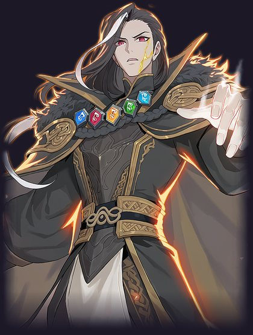
为何而战：四位初代王中唯一没有化进源泉的人，一千年从未睡去。他在等一个能搓出四色之外魔法的人，必须亲手试一试你的魔法够不够撑起一个世界。不够，就让你回去再来。
和主角：你第一世的老师。搓合四色的手法是他亲手教的，在咒需要新王时念出你名字的也是他。「这道咒，本来只该撑一代人。是我，把你也撑了进去。」
被击败：「你比我教的，走得更远了。……源泉，交给你了。由你来选。」
心愿：等一道新的魔法，然后好好睡一觉。睡前想去源泉边问守泉人：今天的天，是什么颜色。
每次回营地，点薇丝塔就能听到新解锁的对话（头顶冒光点提示）。她平时温柔安静、带点调皮；你每刷新一次最远关卡，她都会明显地高兴，这是玩家回营地最想听的声音。
| 进度 | 她讲那里的守关者 | 她讲你们的过去 |
|---|---|---|
| 到第 1 关 | 格雷戈尔：「别恨他。」 | 「你第一次来的时候，手上全是灼痕。我替你包扎，你疼得直笑。」 |
| 到第 2 关 | 伊索尔德和她做的是同一件事：记住。 | 「你教过我分辨元素的味道。火是烤面包，水是雨前的石头……」 |
| 到第 3 关 | 巴尔德温：问过他「不想坐下吗」的只有你。 | 「那个季节，泉边开过一次花。你说是你搓出来的。……可我信了一千年。」 |
| 到第 4 关 | 菲奥娜：「桥交给你了」是你对她说的。 | 「你说『我会回来的』……你没说谎。只是回来的方式，是我替你选的。」（第一次暗示她的罪） |
| 到第 5 关 | 克洛伊和她一样，都不肯放手。 | 「那一夜，源泉里全是光。我把手伸了进去。……剩下的，等你再往上走一点。」 |
| 到第 6 关 | 雷恩：「你要是见了他，别还手。」 | 「你替她戴上了那枚戒指？……我能给你的，只有昨天。」 |
| 到第 7 关 | 赛琳娜：她看见了，还是让你进去了。 | 揭示她的罪：「是我，把你困在了这个圈里。」 |
| 击败第 7 关 | — | 她的愿望：「这是我一千年来，唯一的愿望。」 |
| 到第 8 关 | 阿斯特里昂：「替我问候他。告诉他，天还是蓝的。」 | 「如果你听见源泉里有我的声音，别回头。往前走。」（王座伏笔） |
另外还有她的「高兴池」（刷新最远关卡时）、「努力」系列（倒下 / 唤醒魔法若干次时解锁，例如「你问我手为什么凉？……泉水凉嘛。」，其实她在变淡，在撒谎），以及击败第 3、4、6 关后的短句：「古道上，有人坐下了。」「断桥的风，停了一会儿。」「壁垒上的雷声，今天停了。」
首次击败第 5 关克洛伊后触发，3 幕 CG，全程配音。
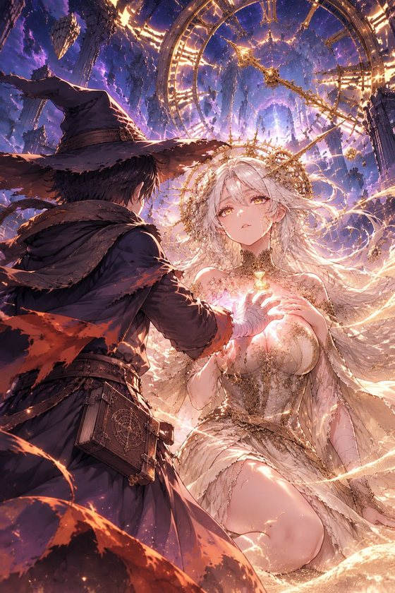
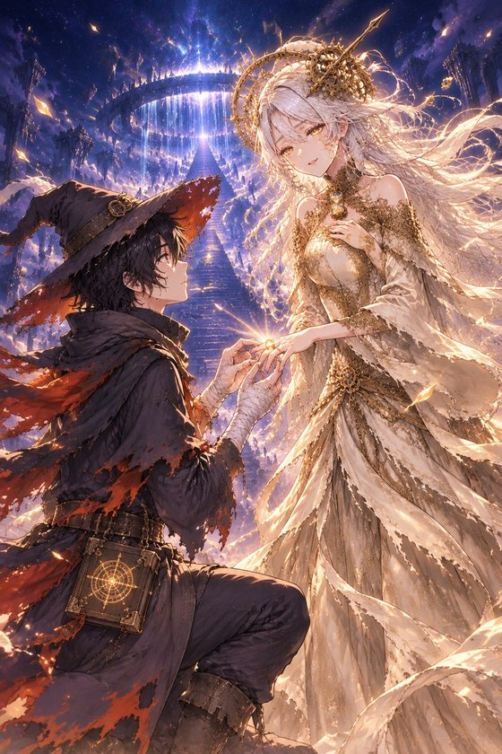
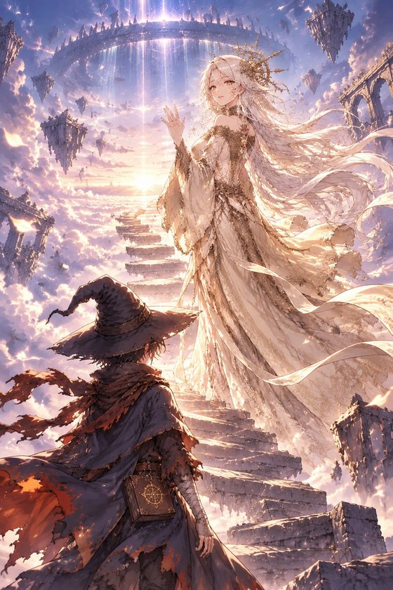
第一幕 · 钟裂：停住的时间要还回来了，城开始坠落，她的长发一缕缕褪成灰白。「没关系。城会落下去，我会老去。这本来就是我欠的。」你按住她胸口倒转的钟，掌心第一次亮起四色之外的光。
第二幕 · 时之约：她把戒指交给你。
「这枚戒指，是给下一位走进王咒的人的。我不会再把它交给任何一位王。所以……你替我戴上。不是做我的王——做那个陪我一起变老的人。你的时间走一步，我的就走一步。」
第三幕 · 各自的路：「我要先走一步。王咒的第一行，埋在原初源泉底下，我去把它找出来。在原初源泉见。这一次，你不会是一个人走到最后。」
之后第 6、7 关里有她用金沙写在石上的留言，例如：「壁垒上那个人，脾气很坏。……替我跟他说一声，我还记得他守夜的样子。——克」
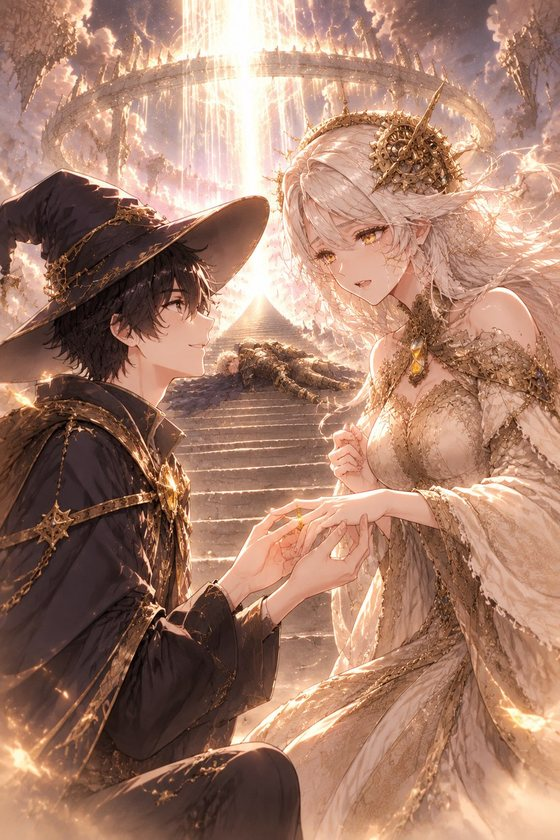
击败初代王后，克洛伊找到了承世之咒的第一行：
「此咒撑至，有人搓出明天。」
「他一直在等的，就是你。……我也是。」
她还在泉底找到一段被时间停住的记忆：
「三百年前，也是你把这枚戒指戴到我手上的。你说：『替我把时间留着。』……我留了三百年。你回来了。」
她以为时之约是第一次，其实是第二次。若击败过雷恩，还会加一句旁白：「远处的壁垒上，有一道雷，朝天打了三下，像在打招呼。」
击败初代王、克洛伊揭示之后，进入结局选择之前。2 幕 CG，配音。
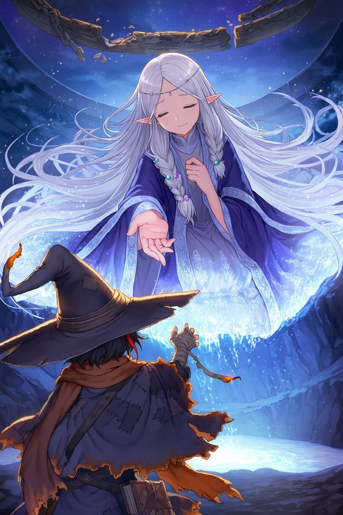
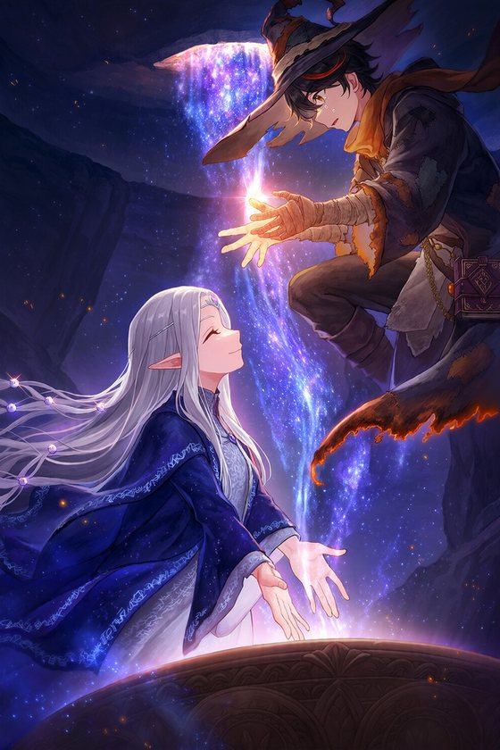
原初源泉几近干涸。泉水里浮起一个由水和光组成的身影：薇丝塔循着两处泉眼的连结来到了这里。
「……找到你了。这一次，是你走到我这里来的。」
「你每一世都问我，为什么要守着那处泉。这一世，我告诉你答案——为了这一刻。」
克洛伊（若有时之约）：「你要做什么？……你会散掉的。」 薇丝塔：「我知道。我是从源泉里来的，就该回到源泉里去。」
她把双手按进源泉，化作光流入泉底。一千年里她记住的每一位王的名字、你每一世的记忆，像星河一样涌进你的双手。
「这样，你就有足够的昨天，去搓出明天了。」「别回头。……往前走。」
旁白：泉底重新亮起。你的掌心里，第五种颜色开始成形。
两条感情线在结局汇合：薇丝塔给你「昨天」，克洛伊给你「明天」。每个结局都有「有时之约 / 没有时之约」两个版本，下面写的是有时之约的版本。
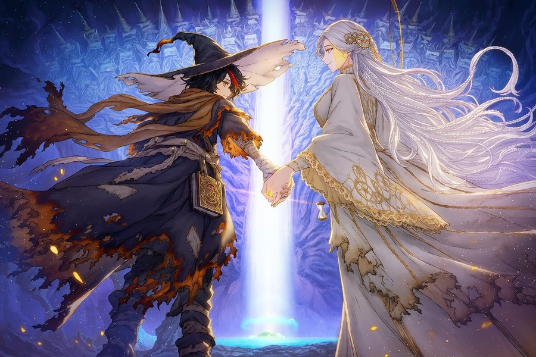
你把双手按进王咒，克洛伊陪你走进了光里：「说好的。你的时间走到哪，我的就走到哪。」土地停止消失，源泉重新涌出魔力。壁垒上，雷恩把旗插回墙头，继续守下去：「下一世，换我等你。」薇丝塔成了源泉本身，营地的泉边空了，泉水里有她的温度：「下一世，泉水会认得你。」
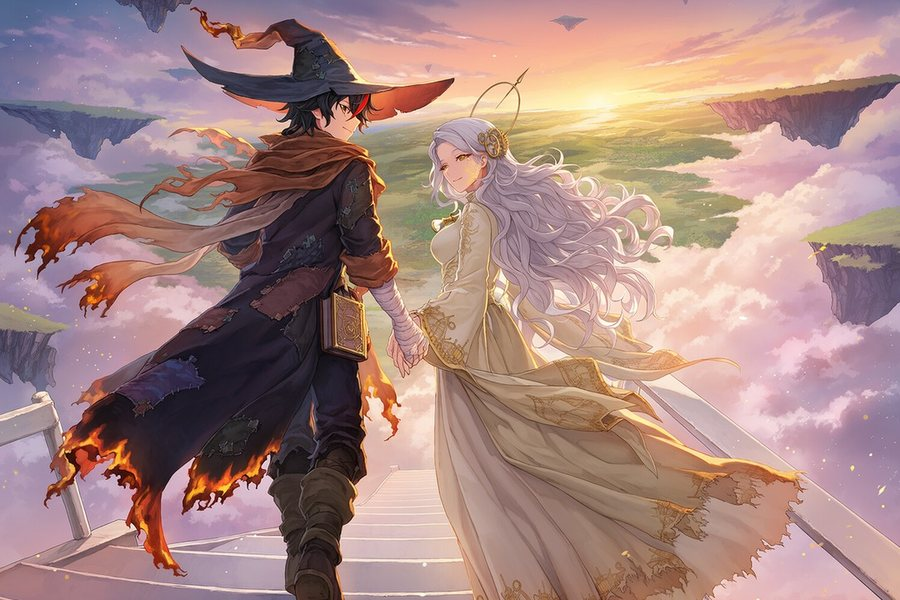
你解开了承世之咒，魔法散尽，土地坠落。雷恩的雷臂熄了，他第一次觉得疼，笑得像个孩子。薇丝塔随最后一缕魔力散去。克洛伊挽着你走下天阶，一千年来第一次有人从上面走下来：「这一次，换我陪你走一辈子。」风里有人轻轻说了一句：「……走慢一点。我想多看一会儿。」
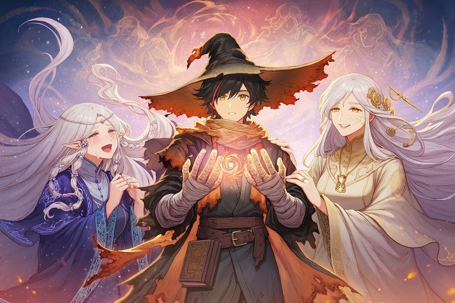
你没有走进旧咒。克洛伊念出第一行，薇丝塔还你所有的昨天，你搓出了四色之外的颜色：明天。明天的第一件事，是把薇丝塔从源泉里捞上来，一千年后换你捞她一次。新的泉边，她睁开眼睛，第一个看见的是你：
「……是你啊。这一次，换你来捞我了。」「……比哪一世的你，都要好看一点。」
时间重新流动，克洛伊不再补裂纹，开始变老：「我第一根白头发，你要第一个看见。」雷恩卸下雷臂，在山下开了间酒馆，招牌叫「瑞」。
第一次击败第 2～8 关守关者，各拾得一片：同一道光，七个人从七个位置看见。
| 关 | 谁 | 那一夜看见的 |
|---|---|---|
| 2 | 伊索尔德 | 送来的名字是「雷恩 · 卡斯坦」，走进光里的不是他。我只写下「艾」字的第一笔，城就沉了。 |
| 3 | 巴尔德温 | 送三个人上山。那个满手灼痕的年轻人回头问我：守了这么久，不想坐下吗？ |
| 4 | 菲奥娜 | 走在最后的那个人揉了揉我的头：「桥交给你了，小团长。」他刚走过去，桥就塌了。 |
| 5 | 克洛伊 | 他把戒指戴到我手上：「替我把时间留着。」我停住了时间，停住了那一刻。 |
| 6 | 雷恩 | 他说今晚换他守夜。我刚转过身，后脑就挨了一下。醒来时只剩一张空王座。 |
| 7 | 赛琳娜 | 走到光前的不是卡斯坦家的继承人，我看见了，还是让他进去了。他回头朝我笑了一下。 |
| 8 | 阿斯特里昂 | 光的另一头伸进来一双手，是我教出来的那双手。这一次没有人念他的名字，他自己走了进来。 |
| 阶段 | 玩家知道的 |
|---|---|
| 第 1～2 关 | 世界在消失；守关者都有苦衷；有一行没写完的名字在等「我」。 |
| 第 3～4 关 | 我前世来过这里，还对他们说过话；薇丝塔第一次暗示「回来的方式是我替你选的」。 |
| 第 5 关 | 克洛伊和时之约，感情线高潮一。 |
| 第 6 关 | 雷恩认出「艾瑞」，前世的兄弟情。 |
| 第 7 关 | 赛琳娜「我还是让你进去了」；薇丝塔坦白她的罪和愿望。 |
| 第 8 关 | 老师、戒指的第二次、最后的守泉人，然后三选一结局。 |
资料来源：research/content/story_magic.json、keeper_arc.md、romance_design.md、past_life_300.md、boss_redesign.md、guardian_lore_magic.json（11-06 当前版本）。